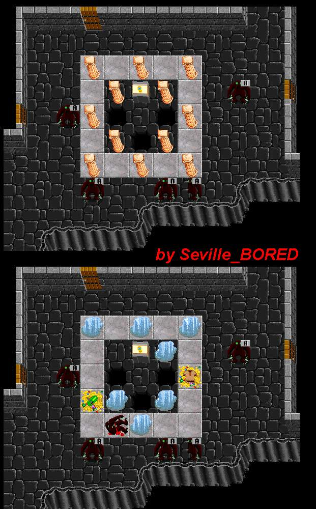

Paladin
Mausoleum

Because of the puddles, this Mausoleum is usually called the Water Mausoleum.
| The Paladin Mausoleum |
||||||||||||
 |
||||||||||||
| The "before" and the "after" of the Paladin Mausoleum. Because of the puddles, this Mausoleum is usually called the Water Mausoleum. |
||||||||||||
| Back to the Mausoleums. | Back to Nork. | |||||||||||